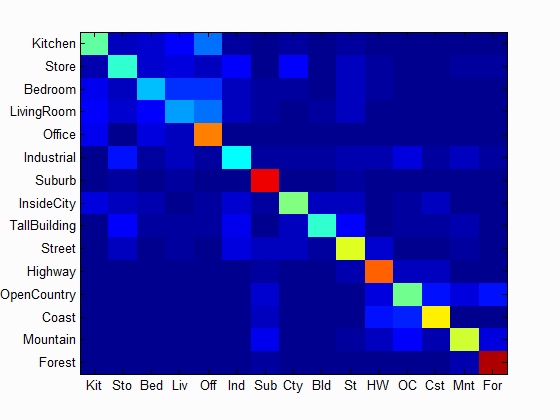

My personal optimal performance, 67.5%
For this project, we implemented a variety of methods of categorizing scenes based on features within them. The baseline performance we established was achieved by downsampling the input images until we reached a size such that we could reasonably compute the similarity of two images by calculating the pixel-by-pixel difference in a relatively small amount of time. After that, we began to estimate the similarity of scenes by building a vocabulary and a bag of sift features, and using that vocabulary to "describe" images, then finally compare the "descriptions" of the training images to the "descriptions" of the test images, and make classifications based on that similarity.
For comparison of similarity, we implemented two methods. The first was a simple nearest-neighbor search function built into matlab. This was relatively straight-forward, as it simply involved a nearest-neighbor search between the training data and the test datum, and whichever training datum was most similar was perceived to be the target category. The second method was a bit more complex; it involved creating a set of Support Vector Machines(SVMs), that acted as binary category classifiers. We created an SVM for each category, using the training image features and their labels.
This project waws quite computationally heavy, as it frequently required descriptive processing of an image- repeated over a large number of images for training. To alleviate some of this processing time, I used parallelized for loops, using matlab's parfor keyword. This was applicable
because of the fact that in many cases, the computations being done within the parfor loop
highlighting folder is configured to do syntax highlighting in code blocks such as the one below.
|
Different levels |
 |
|---|---|
| Varying vocab size |